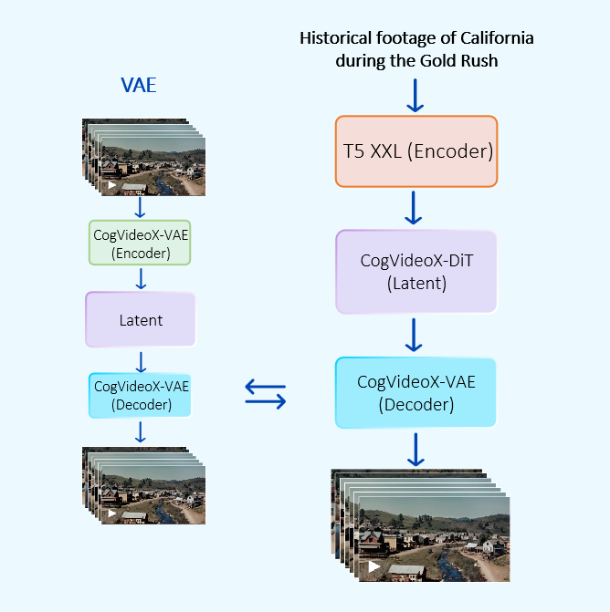
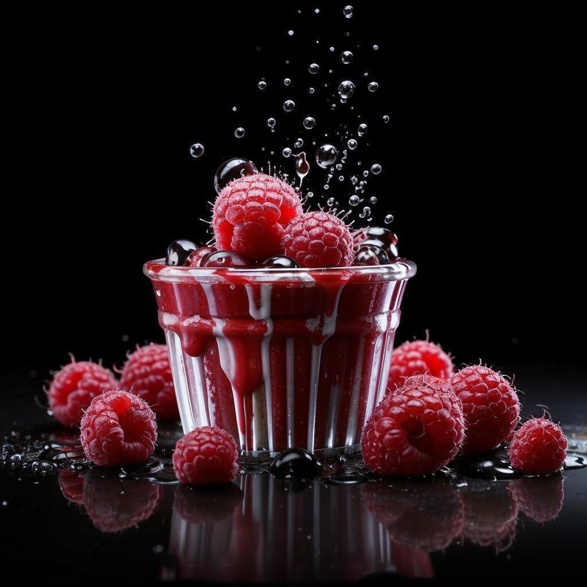

Overall Pipeline
The base model pipeline include following parts:
- Variational autoencoder for video compression. We use the open-source implementation of 3D causal VAE from CogVideoX. We compress the video 8 times in spatial dimensions and 4 times in the time axis.
- Text embedder. To obtain embedding representations of textual descriptions, we use T5-V1.1-XXL.
- Latent diffusion denoiser has an MMDiT-like architecture. In total, our model has 21 pairs of MMDiT-blocks with local and global attention (or 42 blocks with full attention for low-resolution). The hidden state dimension is 3072.
Text-to-Video
| Close-up of a snow leopard sitting on a rock and looking straight into the frame, light snow falling, wind blowing. | A beautiful ship with scarlet sails sails among the high waves in the ocean. | In the center of a forest clearing stands a small mushroom with golden edges, emitting starlight and shining brightly under its cap. Butterflies fly around it. | White owl sitting on a wooden fence on the background of a winter garden with roses, owl feathers rustling in the wind, the owl looks into the frame and blinks softly, pink roses are blooming, light snow is falling, lanterns glare and blink. | A huge hourglass with a waterfall of clouds at the top and a miniature rainforest at the bottom. |
Image-to-Video
|  | |
| Raspberries fall into the glass and splash around the splashing splashes water droplets on the sides fly around. | |
 |
|
| The cute dragon winks one eye and looks around, smiling quietly and wagging his tail. | |
| The bird shook itself vigorously, fluffed its feathers quickly, and swiftly turned its head to the right. |
Text-to-Image-to-Video
| A woman sits alone in a train carriage and looks out the window at the forest landscape passing by. The scene evokes a melancholic and contemplative mood. The composition conveys a moment of loneliness and introspection. | Manual camera, driving a car during daytime in Moscow. Cinematic, soft effects, muted color, color correction, shallow depth of field. | A velvet-pink peony bud with a white border blooms, a butterfly flies out of the flower, opens its leaves during rain, sunlight glints into the frame. |
Video-to-Audio
Distilled model
More examples
| On a beautiful picturesque lawn plays a kitten, quietly pushing a ball with its paw, a light wind rustles the grass, the bright sun illuminates the lawn. | A cute girl with the developing hem of her dress stands on a sandy shore near the ocean, the sound of the surf of the waves, the splash and splash of the water beating against the shore, the light wind swaying the thick grass nearby. | Evening sunset, drawbridge between the houses, the beauty of the river murmuring, drawbridge begins to open lifting the flaps up, the view from the ship. | A cute puppy pops out of a gift box, with pearl beads and peony flowers glittering around him. |
| Portrait photography of a red deer, which picks moss from the ground and chews it, colorful details, taiga forest, sunlight penetrates and glares through the deer antlers. | Cat playing with a ball of yarn, close-up. | A racing gold sports car racing at high speed enters a turn on the race track, with highlights on the shiny gold body. | A huge mechanism with spinning bronze gears and glass tubes through which blue neon liquid flows, with highlights on shiny bronze gears, close-up. |
Authors
Project Leader: Denis DimitrovScientific Consultant: Andrey Kuznetsov, Sergey Markov
Training Pipeline & Model Pretrain & Model Distillation: Vladimir Arkhipkin, Novitskiy Lev, Maria Kovaleva
Model Architecture: Vladimir Arkhipkin, Maria Kovaleva, Zein Shaheen, Arsen Kuzhamuratov, Nikolay Gerasimenko, Mikhail Zhirnov, Alexandr Gambashidze, Konstantin Sobolev
Data Pipeline: Ivan Kirillov, Andrei Shutkin, Kirill Chernishev, Julia Agafonova, Denis Parkhomenko
Video-to-audio model: Zein Shaheen, Arseniy Shakhmatov, Denis Parkhomenko
Quality Assessment: Nikolay Gerasimenko, Anna Averchenkova
Other Contributors: Viacheslav Vasilev, Andrei Filatov, Gregory Leleytner
BibTeX
@inproceedings{vladimir-etal-2024-kandinsky,
title = "Kandinsky 3: Text-to-Image Synthesis for Multifunctional Generative Framework",
author = "Vladimir, Arkhipkin and
Vasilev, Viacheslav and
Filatov, Andrei and
Pavlov, Igor and
Agafonova, Julia and
Gerasimenko, Nikolai and
Averchenkova, Anna and
Mironova, Evelina and
Anton, Bukashkin and
Kulikov, Konstantin and
Kuznetsov, Andrey and
Dimitrov, Denis",
editor = "Hernandez Farias, Delia Irazu and
Hope, Tom and
Li, Manling",
booktitle = "Proceedings of the 2024 Conference on Empirical Methods in Natural Language Processing: System Demonstrations",
month = nov,
year = "2024",
address = "Miami, Florida, USA",
publisher = "Association for Computational Linguistics",
url = "https://aclanthology.org/2024.emnlp-demo.48",
doi = "10.18653/v1/2024.emnlp-demo.48",
pages = "475--485",
abstract = "Text-to-image (T2I) diffusion models are popular for introducing image manipulation methods, such as editing, image fusion, inpainting, etc. At the same time, image-to-video (I2V) and text-to-video (T2V) models are also built on top of T2I models. We present Kandinsky 3, a novel T2I model based on latent diffusion, achieving a high level of quality and photorealism. The key feature of the new architecture is the simplicity and efficiency of its adaptation for many types of generation tasks. We extend the base T2I model for various applications and create a multifunctional generation system that includes text-guided inpainting/outpainting, image fusion, text-image fusion, image variations generation, I2V and T2V generation. We also present a distilled version of the T2I model, evaluating inference in 4 steps of the reverse process without reducing image quality and 3 times faster than the base model. We deployed a user-friendly demo system in which all the features can be tested in the public domain. Additionally, we released the source code and checkpoints for the Kandinsky 3 and extended models. Human evaluations show that Kandinsky 3 demonstrates one of the highest quality scores among open source generation systems.",
}
@article{arkhipkin2023fusionframes,
title = {FusionFrames: Efficient Architectural Aspects for Text-to-Video Generation Pipeline},
author = {Arkhipkin, Vladimir and Shaheen, Zein and Vasilev, Viacheslav and Dakhova, Elizaveta and Kuznetsov, Andrey and Dimitrov, Denis},
journal = {arXiv preprint arXiv:2311.13073},
year = {2023},
}